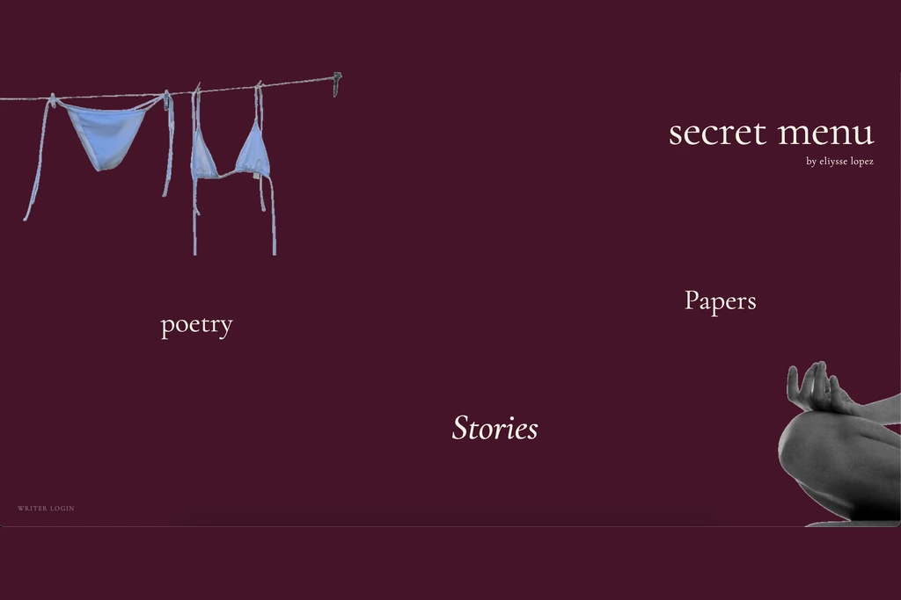
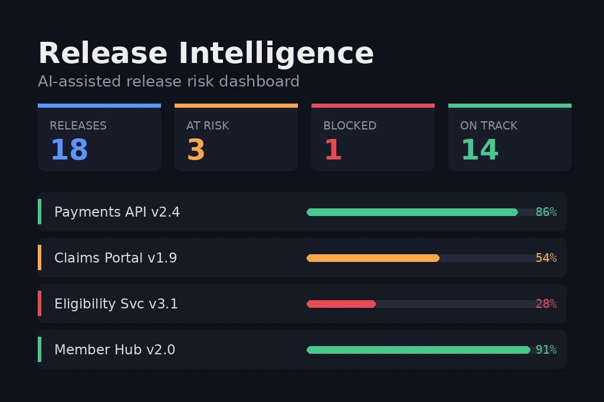
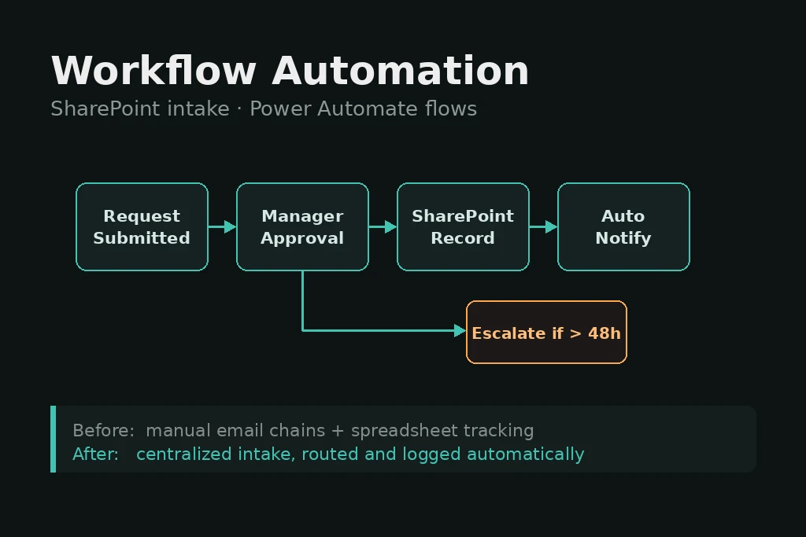
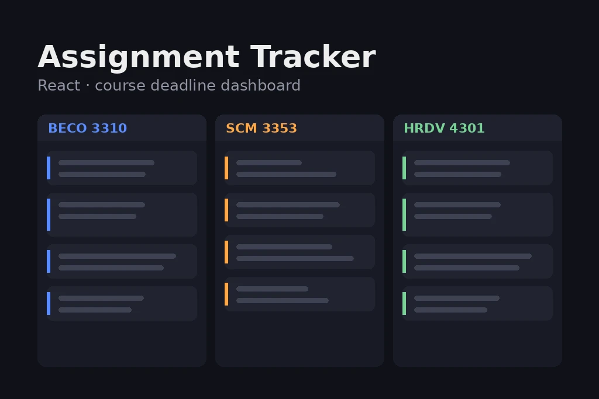
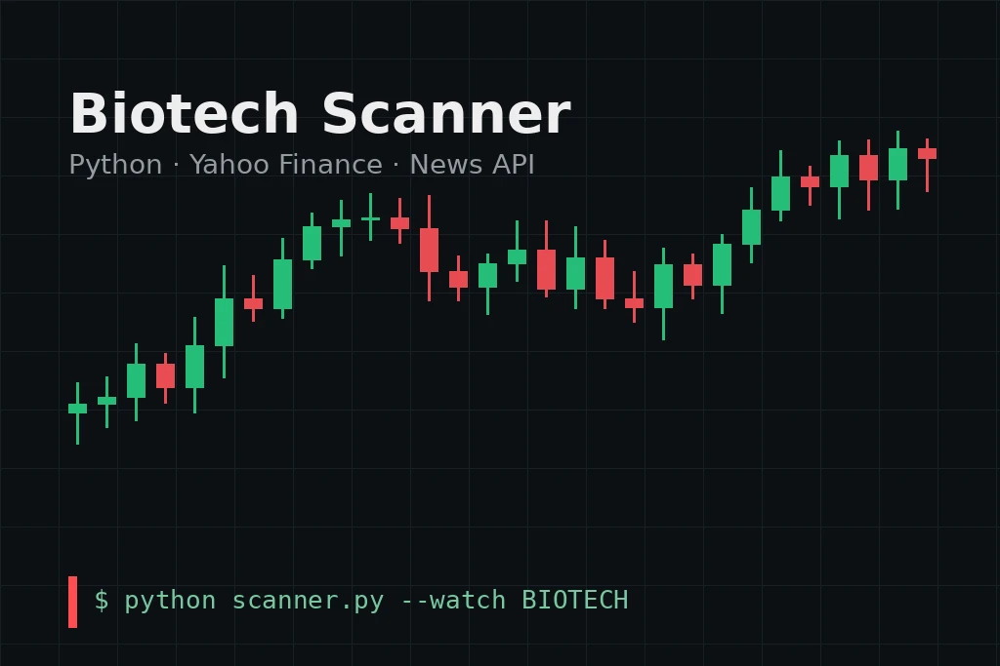
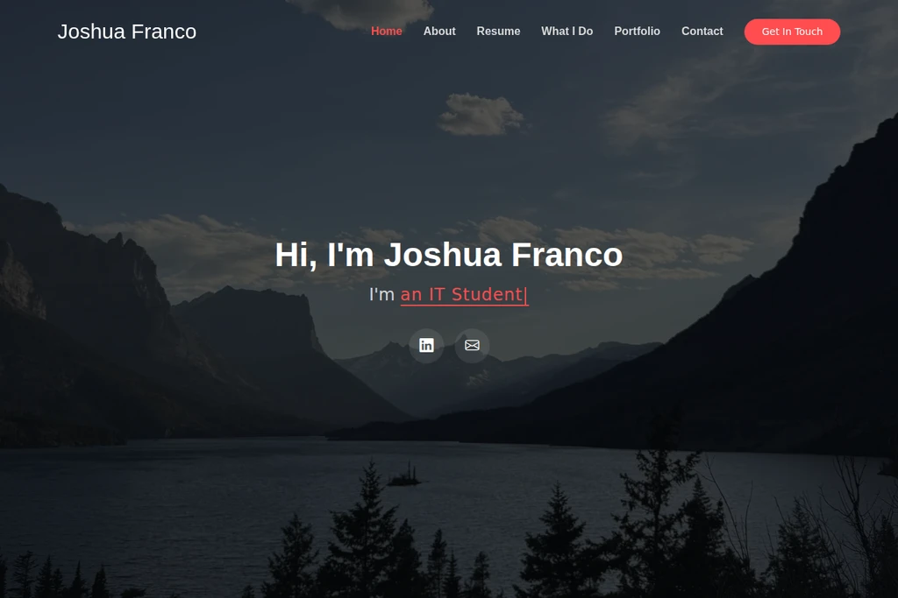

Hi, I'm Joshua Franco
I'm
About Me
A first-generation Information Technology student at Texas Tech University, focused on the space where technology and people meet. My interest are in project management, process automation, data, AI, and building systems teams actually want to use.
Joshua Franco
IT Project ManagementDec '26
Graduating
2
Campus Roles
2
Languages
Technology Works Best When People Do
I'm an Information Technology major with a minor in Human Resource Development at Texas Tech University's Rawls College of Business, graduating in December 2026. That pairing is what I'm focused on. Most technology projects don't fail because the code is wrong but instead they fail because requirements were unclear, stakeholders weren't aligned, or nobody asked the people doing the work what they actually needed.
This past summer I interned as an IT Project Management Intern at Gainwell Technologies, where I built SharePoint and Power Automate workflows for the PMO and led development of an AI-assisted release intelligence platform, coordinating a team of software developers and business analysts. On campus, I serve as an HSI / TRIO SSS Student Assistant and as Secretary of the Men's Soccer Club.
I grew up in Houston, raised by a single mother, and I'm the first in my family to attend college. That background shapes how I lead, how I ask questions early, how I make sure quieter voices get heard, and why I care about people in my shoes.
Core Competencies
Resume
Where I've worked, what I've studied, and the credentials I'm building toward a career in IT project management.
Professional Journey
Roles that have shaped how I lead projects, work with stakeholders, and turn messy processes into something that runs.
HSI / TRIO SSS Student Assistant
Texas Tech University
PresentCoordinate programming and student outreach supporting Hispanic-Serving Institution initiatives across campus. Manage day-to-day operations, support event logistics, and help connect students to university resources.
IT Project Management Intern
Gainwell Technologies
May 2026 – August 2026Built SharePoint and Power Automate workflows for the PMO, reducing manual reporting overhead. Led development of an AI-assisted release intelligence platform, directing a team of software developers and business analysts through requirements, build, and delivery.
Academic Background
Coursework at the intersection of information systems and people development, plus the certifications I'm pursuing next.
B.B.A. Information Technology
Rawls College of Business, Texas Tech University
Minor in Human Resource Development. Relevant coursework: Information Systems Project Management, Web Design & Implementation, Database Management, Principles of Leadership, and Supply Chain & Operations Management.
Secretary, Men's Soccer Club
Texas Tech University
Manage club communications, rosters, and scheduling for a competitive student organization, coordinating between officers, members, and university recreation staff.
Professional Certifications
What I Do
The areas I work in and keep building on — a mix of project delivery, automation, and the people side of technology.
IT Project Management
Planning, scoping, and delivering technology projects — timelines, stakeholder updates, and keeping scope honest from kickoff through release.
See My WorkProcess Automation
Building Power Automate and SharePoint workflows that replace manual, repetitive steps with something that runs on its own.
See My WorkBusiness Analysis
Turning vague asks into clear requirements. Interviewing stakeholders, documenting workflows, and making sure developers build the right thing.
See My WorkWeb & App Development
Full-stack builds with HTML, CSS, JavaScript, and React, backed by Supabase and PostgreSQL, deployed through GitHub and Netlify.
See My WorkData & Reporting
Writing SQL, building dashboards, and turning raw project data into something leadership can actually make decisions from.
See My WorkTeam & People Development
Where my HRD minor comes in — onboarding, training materials, and mentoring, especially for first-generation students.
See My WorkLooking for a December 2026 Grad?
I'm seeking full-time IT project management and implementation roles. Let's talk about what your team needs.
Projects
Work from my internship, coursework, and personal projects — the things I've actually built and shipped.
- All Work
- Project Management
- Automation
- Development






Like what you see?
I'm always glad to talk through a project, a role, or how I approach getting things delivered.
Get In Touch
Recruiting, collaborating, or just curious about something on this page — send a message and I'll get back to you.
Location
Lubbock, Texas — open to relocation
Connect
linkedin.com/in/joshua-franco4
Email Me
j_franco05@outlook.com